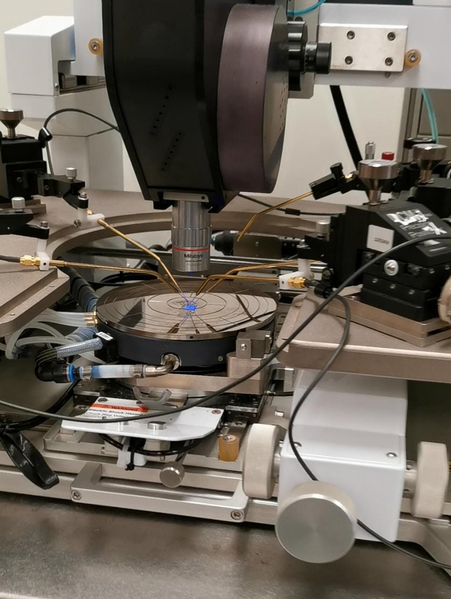
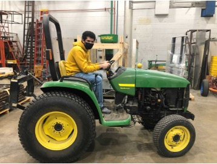
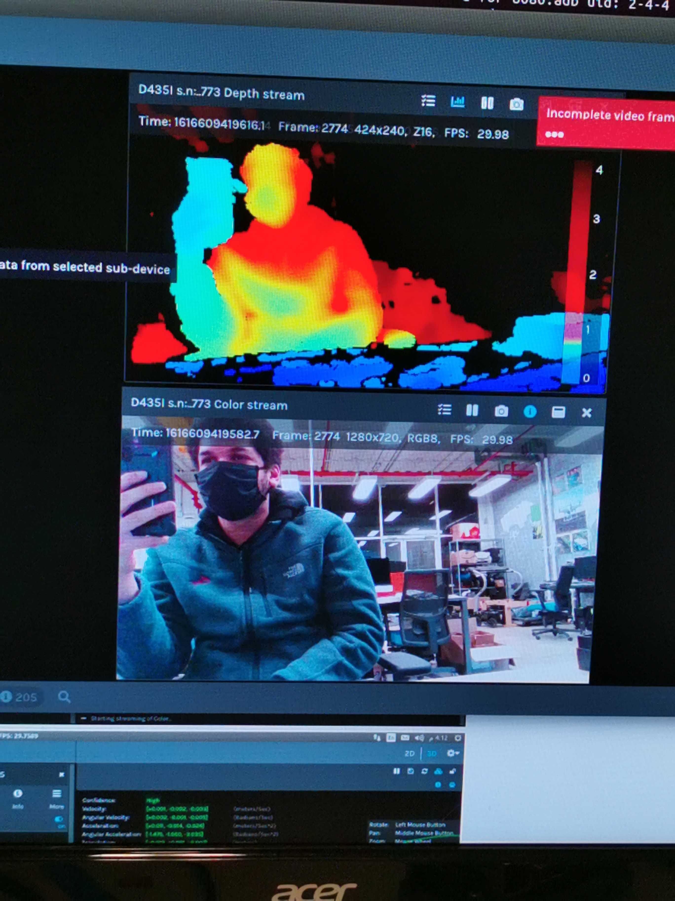
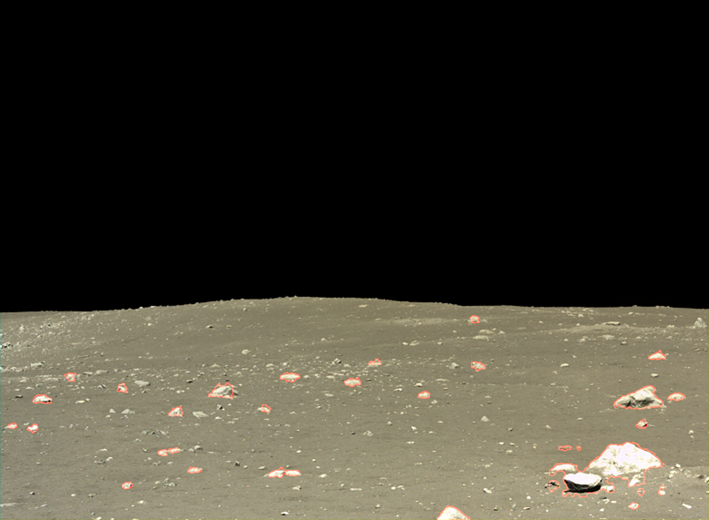

Currently a member of Gazzola Lab.
My current research revolves around using computational methods to model and
understand slender soft body systems. I am interested in using these methods
for designing soft robot actuators and developing control frameworks to
control soft robots in complex environments. Below are some highlights of
my work.
Materials that expand anisotropically can be used to make coiled muscles that reversibly untwist
when heated/chemically actuated. These types of have several advantages that make interesting for
robotic applications. These advantages include the following:
Being easy and inexpensive to manufacture
Operate without hysteresis
Provide more than 30% reversible contraction
Provide millions of cycles of stroke without significant degradation
Below is an example of these muscles in action. I developed a model for the actuation of these muscles
and used our simulator PyElastica to simulate
the actuation of single fiber muscle. We work closely with the kinetic Materials Research Group
who manufacture these muscles and provides us with experimental data to validate our models.
I am also working on using the muscle models I developed to design different mechanisms using
the coiled artifical muscles for various applications. Here's an example of using these muscles as a
an actuator to bend and twist an octopus arm.
Here's another example of the muscles being used in antagonstic arrangment that is analogous to
the bicep and tricep in a human arm. For the example shown below I had to extended the capability
of our simulator PyElastica to be able to handle triangluar mesh based rigid bodies and surfaces.
One of the other applications of the new triangluar mesh based surfaces import capability I developed was to use it
to test out some RL based control strategies for limbless soft robot navigation our team has been working on. Shown below
are some examples of these control strategies being used on reconstructed real environments.
Undergraduate Research
During my undergraduate studies I experimented with doing research in many different fields and
I developed many useful skills as a result. Many of them had a computational focus, but some also
involved hands-on work such as gathering experimental data or to setting up/designing hardware systems.
Below are some of the projects I worked on during my bachelor's.
I worked on this project during my time at KAUST in Summer of 2021. The project was to
develop a computational model for a microbot leg designed by Hussein Hussein (who was a
postdoc at KAUST at the time). The model was to be used to understand and control the
microbot leg to make it walk. Shown below is the microbot next to my finger for scale.
I had three main tasks in this project.
Develop an analytical model for the microbot leg
Simulate the leg using this model in MATLAB
Collect experimental data to validate the simulation and model
This was a unique experience for me at the time because it was my first time developing a
model for a non-rigid body robotic system (the leg had elements that would deform to move it).
It was also my first time creating my own simulation of a physical system (instead of using a simulator).
Additionaly, I learned how to use a probe station (shown below) to gather data for micro sized systems.

For more details on this project, you can take a look at the poster
I made for KAUST Internship Program Poster Symposium. Now that I think back about this project, it did end
up starting my passion for using computational tools to model physical systems.
I worked on this project during my Junior when I got into the DPI Research Scholars program.
The project goal was to convert a regular tractor into an autonomous one. The project was supervised
by professor Girish Chowdhary here at Illinois. My tasks for the project was to setup the hardware
systems (computers, sensors, and actuators) that will be used to automate the tractor. A picture of
me riding the tractor is shown below.

I learned a lot about setting up hardware systems during this opportunity such selecting appropriate
computers, depth/stereo cameras, lidars, and motors for a particular application, installing Ubuntu and ROS on a computer,
installing ROS wrappers for different sensors, using ROS to communicate between multiple computers and so
much more. Below are pictures of the Velodyne Puck Lidar and Intel Realsense D435i data running in Rviz.

It was an overall great learning experience, and it gave me enough understanding of hardware selection and
setup that I can start making my own robotics projects. You can see some of my personal projects inspired by the
things I learned in this project through here!
I worked on this project during summer 2020 when I got into the Carnegie Mellon University Robotics Institute Summer
Scholars (RISS) program. I worked on the Iris Lunar Rover teleoperations team
whose main objective was to create a system for localizing the rover when it is on the moon based on its surroundings.
Since the only thing surrounding the rover on the moon are rocks, rock detection and segementation are crucial for
figuring out where the rover is with respect to its surroundings. My task was to develop software that can detect and
segement rocks from camera images to be used for localization. An example of rocks being detected and segemented is
shown below.

This was my first purely computational project as I was working remotely due to the Covid-19 pandemic. I learned a lot
about computer vision, image processing, and methods for localization and mapping such as SLAM. It also exponentially
improved my programming skills and taught me a lot of the best practices for programming (writing documentation, separate
long code into multiple files and so on). I also wrote my first research paper which was published in the 2020 issue of
the Robotics Institute Summer Scholar'
Working Papers Journals./ For more details on the project you can check the paper or the
poster I made for RISS poster session.
It was unfortunate that IRIS never made to the moon due to Astrobotic's Peregrine lander experiencing an anomaly that
would prevent it from making a soft landing on the moon, which meant it had to make a controlled reentry to Earth. Although
the work we did never made it to the moon, me and everyone else who worked on the project learned a lot from this project
that would help future generations of rovers and we succeeded in making a rover that went closer to the moon than any other
student built rover has to date.